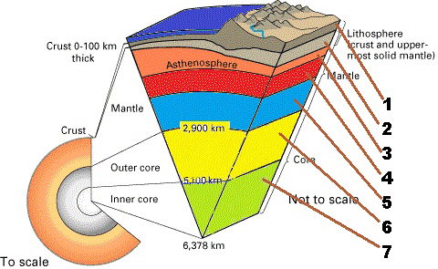
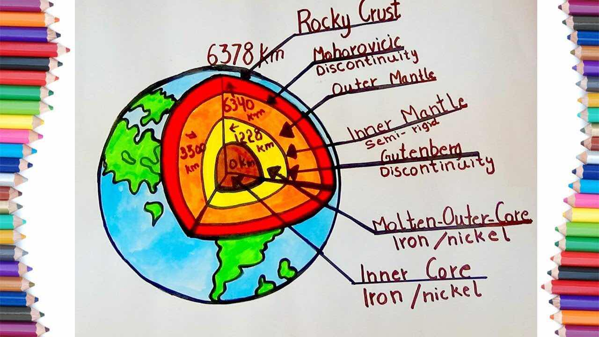

Allah is the One Who created seven heavens ˹in layers˺, and likewise for the earth. The ˹divine˺ command descends between them
so you may know that Allah is Most Capable of everything and that Allah certainly encompasses all things in ˹His˺ knowledge.
—Qur'an 65:12 [Dr. Mustafa Khattab]
We notice through the Tafsir that this is talking about Layers, not likewise Earths.
and of the earth the like thereof
means, He (Allah) created seven Earths.
In the Two Sahihs, there is a Hadith that states,
«مَنْ ظَلَمَ قِيدَ شِبْرٍ مِنَ الْأَرْضِ طُوِّقَهُ مِنْ سَبْعِ أَرَضِين»
Whoever usurps the land of somebody unjustly, even if it was a mere hand span, then his neck will be encircled with it down
to the seven earths.
And in Sahih al-Bukhari the wording is:
«خُسِفَ بِهِ إِلَى سَبْعِ أَرَضِين»
...he will sink down to the seven earths)
❁
In the beginning of my book, Al-Bidayah wan-Nihayah, I mentioned the various narrations for this Hadith when I narrated the
story of the Creation of the Earth. All the thanks and praise is due to Allah. Those who explained this Hadith to mean the seven
continents have brought an implausible explanation that contradicts the letter of the Qur'an and the Hadith without having proof
Source: Tafsīr Ibn Kathīr Qur’ān 65:12
So, scientifically, are there 7 Layers of Earth?
–

https://www.ck12.org/book/ck-12-earth-science-concepts-for-high-school/section/3.11/
Evidence of Scholars believing so, in Tafsir al-Qurtubi 65:12,
واختلف فيهن على قولين : أحدهما : وهو قول الجمهور - أنها سبع أرضين طباقا بعضها فوق بعض ، بين
كل أرض وأرض مسافة كما بين السماء والسماء ، وفي كل أرض سكان من خلق الله . وقال الضحاك : ومن
الأرض مثلهن أي سبعا من الأرضين ، ولكنها مطبقة بعضها على بعض من غير فتوق بخلاف السموات .
والأول أصح ; لأن الأخبار دالة عليه في الترمذي والنسائي وغيرهما
"And they (meaning the scholars) differed with two views on the subject. Firstly - and this is the view of the majority -,
that they are seven earths above each other in layers, between each one a distance of one earth, just as there would there be
for one heaven and another, and in every earth the creation of Allah.
al-Dahhak said: {And of the earth, the like of them} meaning seven earths, but there are no spaces in between them, unlike
the heavens.
And the first view is the most correct, because there are reports that point to it that are in the [collections]
of al-Tirmidhī and al-Nasā'ī and other than them."

https://phys.org/news/2015-12-earth-layers.html
https://www.sciencenewsforstudents.org/article/explainer-earth-layer-layer